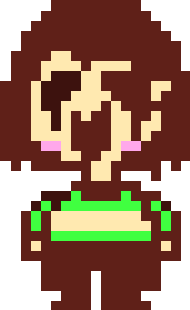

L'histoire d'Undertale se déroule dans l'Underground, une région souterraine où les monstres vivent après avoir été bannis par les humains. Un jour, un enfant humain tombe dans cette région et rencontre Flowey, une fleur consciente qui explique les mécanismes du jeu.
Flowey tente de tuer l'enfant, mais celui-ci est sauvé par Toriel, un monstre ressemblant à une chèvre qui le protège et lui apprend à résoudre des énigmes pacifiquement.
L'enfant part ensuite en quête du château d'Asgore, le roi du souterrain, pour trouver la barrière vers la surface.
En chemin, il rencontre plusieurs monstres, dont les frères squelettes Sans et Papyrus, Undyne la chef de la garde royale, Alphys la scientifique, et Mettaton le robot animateur.
La fin d'Undertale dépend des choix du joueur concernant les combats avec les monstres.
Flowey ayant absorbé toutes les âmes humaines
Différentes fins possibles :
Route neutre :
La Route dite "neutre" est souvent la première que le joueur prend. Elle se déclenche lorsque le joueur ne tue pas tous les monstres et ne se lie pas avec certains personnages secondaires.
Après un affrontement avec Asgore, ce dernier ce fait achevé par Flowey qui récupère les âmes humaines. L'humain combat alors la fleur devenu maintenant l'équivalent d'un dieu. Les âmes humaines finissent par se rebeller et se libérer, et le joueur a le choix d'éliminer ou de laisser fuir Flowey.
Asriel combattant le protagoniste
Route pacifiste :
La Route dite "pacifiste" est accessible après avoir terminé une partie "neutre" sans tuer de monstres et en ayant eu des rendez-vous avec Papyrus et Undyne. Le joueur est alors ramené à sa sauvegarde juste avant le combat contre Asgore pour accéder à la dernière quête nécessaire.
Ensuite, pendant le combat avec Asgore, Toriel intervient pour arrêter les hostilités, suivie par d'autres monstres avec lesquels le joueur a tissé des liens.
Cependant, Flowey apparaît et utilise leurs âmes pour se transformer en Asriel, l'enfant de Toriel et Asgore.
Le joueur parvient à vaincre Asriel en ramenant à la raison les âmes de ses amis. Après sa défaite, Asriel implore pardon et brise la barrière, permettant aux monstres de retourner à la surface.

Chara prenant l'âme de l'humain
Route génocide :
La Route dite "sans pitié" ou "génocide" se produit lorsque le joueur décide de massacrer tous les monstres du jeu, créant ainsi une atmosphère sombre et éliminant une grande partie de la narration.
Lorsque le joueur atteint le château d'Asgore, Sans tente de l'arrêter mais est tué. Face à Asgore, Flowey tue le roi pour essayer d'être épargné, mais est finalement exécuté par le protagoniste.
Chara, l'enfant adoptif de Toriel et Asgore apparaît alors et détruit l'univers des monstres. Pour rejouer, le joueur doit symboliquement offrir son âme pour restaurer l'univers, rendant la présence de Chara plus intense dans toutes les parties futures, quel que soit le choix de route.
 Accueil
Undertale
Fandom
Accueil
Undertale
Fandom